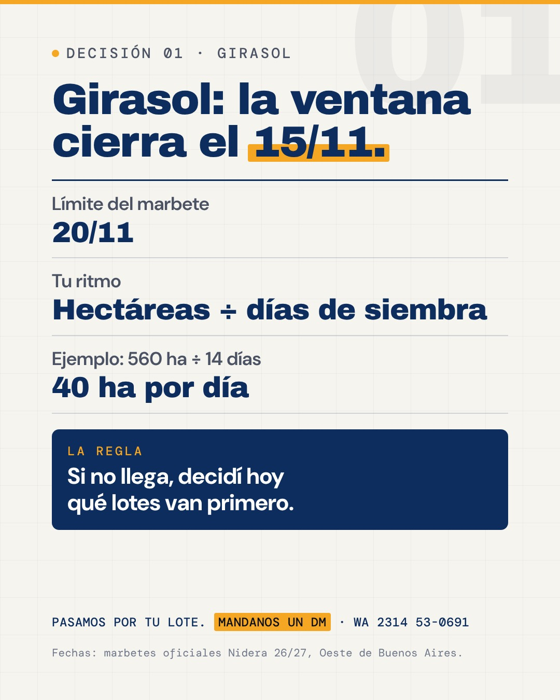

Decisión 01 · Girasol
Girasol: la ventana cierra el 15/11.

Se llevaSi no llega, decidí hoy qué lotes van primero.
Texto para publicar
Girasol: la ventana óptima cierra el 15/11. 🌻 En el oeste, el límite es el 20/11 (marbetes Nidera). Tu ritmo: hectáreas que faltan ÷ días de siembra que quedan = ha por día. Si no llega, decidí hoy qué lotes van primero. Pasamos por tu lote: Mandanos un DM · wa.me/5492314530691 #Henderseeds #Nidera #Girasol #Siembra2627 #Henderson #Daireaux #Bolivar

Ventana del girasol, Oeste de Buenos Aires: marbetes oficiales Nidera 26/27. Ejemplo rotulado (560 ha ÷ 14 días).